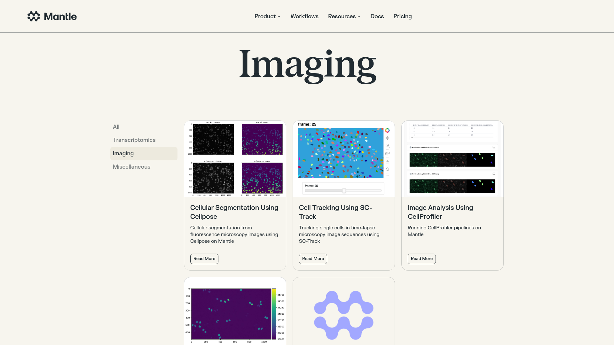
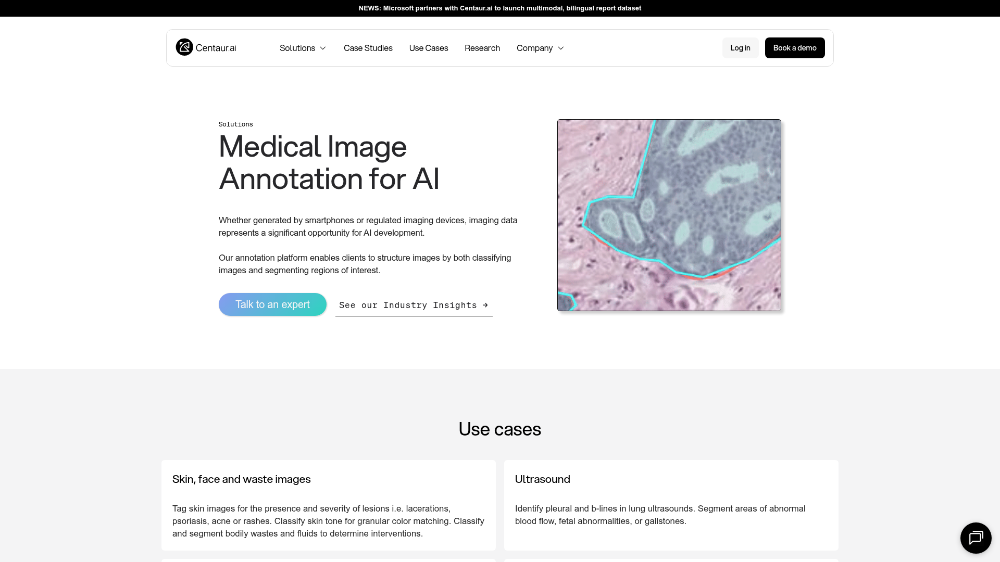
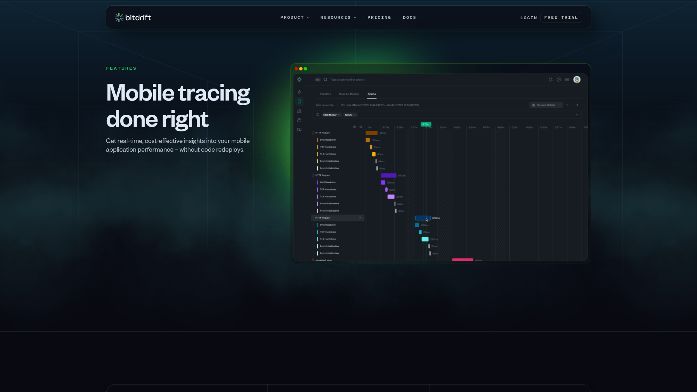
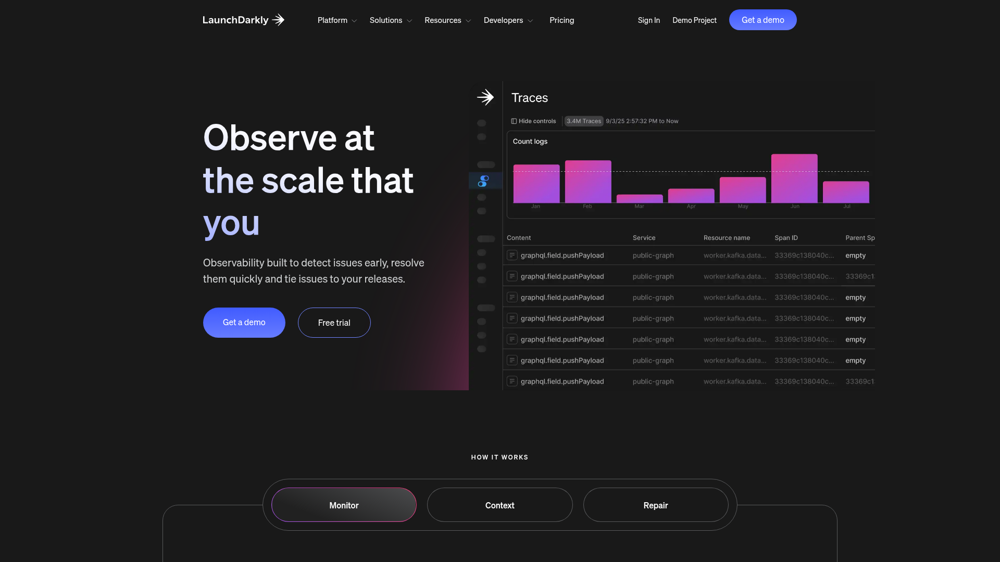
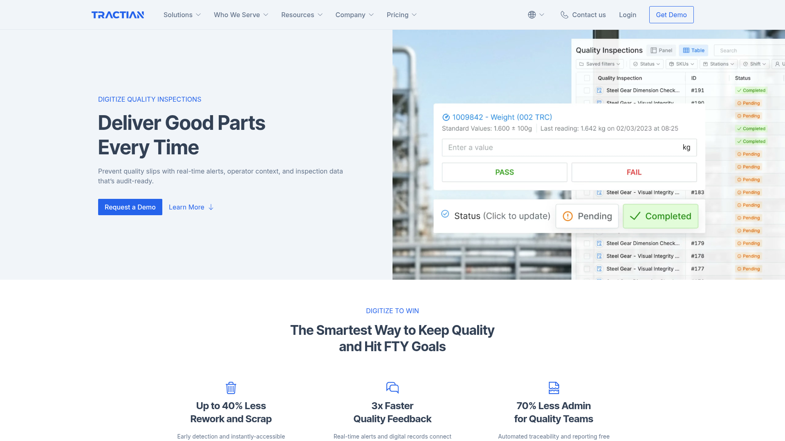

Design Research: FIB/SEM Metrology Dashboard
Recommendations
- Use a central viewer as the main object, not a decorative preview.
- Treat raw edge candidates like a debug/trace layer with low-opacity ticks.
- Replace correctness-style confidence with coverage/count metrics.
- Use charcoal surfaces, high-contrast text, and restrained cyan/green/yellow accents.
Applied Layout
FIB/SEM Measurement Tool | current file | load | run | CSV Image list | Image viewer with ROI/candidates/legend | Inspector Result table: file, mode, ROI, value, raw edges, coverage, selected, threshold
Key Lazyweb References

MantleBio: microscopy image thumbnail grid with sidebar navigation and image actions.

Centaur: medical image annotation preview and image-first hierarchy.

bitdrift: dark trace/debug visualization with dense filters.

LaunchDarkly: dark observability dashboard with tables and operational controls.

Tractian: manufacturing quality dashboard pattern with KPI status and actionable rows.
Patterns Used
- Large central visual workspace
- Left navigation/list for input images
- Right inspector for settings and selected result
- Bottom data table for batch result review
- Layer toggles for debug overlays